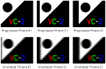

VC-2 encoder conformance testing procedure¶
The VC-2 encoder conformance testing procedure is described below. In summary, the raw video test sequences generated in the Generating test cases step will be encoded using the candidate encoder. The resulting bitstream will then be checked using the vc2-bitstream-validator and encoded pictures compared with the originals for similarity.
Note
Whilst it is possible to carry out the encoder testing procedure manually, we recommend producing a script to automate most of the steps required for the particular encoder being tested. You must still take care to manually inspect and compare all decoded pictures, however.
Encoding the reference bitstreams¶
For each codec feature set provided, a set of raw videos are produced. These
are located in directories matching the pattern <codec feature set
name>/encoder/<test-case-name>/. The specific test cases generated will vary
depending on the codec features specified.
Each test case must be encoded independently by the encoder under test and the encoded bitstreams stored on disk. The encoder must not crash or produce any warnings when encoding these test sequences.
Checking the encoded bitstreams¶
Each encoded bitstream must be checked with the vc2-bitstream-validator. This tool simultaneously verifies that the bitstream meets the requirements of the VC-2 specification and provides a reference decoding of the stream.
The tool takes a VC-2 bitstream as argument and optionally an output name for the decoded pictures, as illustrated below:
$ mkdir real_pictures_decoded
$ vc2-bitstream-validator \
real_pictures.vc2 \
--output real_pictures_decoded/picture_%d.raw
If the bitstream is valid, the following message will be produced:
No errors found in bitstream. Verify decoded pictures to confirm conformance.
Otherwise, if a conformance error is found, processing will stop and a detailed error message will be produced explaining the problem.
Once a bitstream has been validated and decoded using vc2-bitstream-validator, the vc2-picture-compare command is used to compare the output against the original pictures. The script must be provided with two raw picture filenames, or two directory names containing raw pictures. One should contain the original images, and the other its encoded then decoded counterpart. The similarity of the images will be reported. For example:
$ vc2-picture-compare real_pictures/ real_pictures_decoded/
Comparing real_pictures/picture_0.raw and real_pictures_decoded/picture_0.raw
Pictures are different:
Y: Different: PSNR = 55.6 dB, 1426363 pixels (68.8%) differ
C1: Different: PSNR = 57.7 dB, 662607 pixels (63.9%) differ
C2: Different: PSNR = 56.8 dB, 703531 pixels (67.9%) differ
Comparing real_pictures/picture_1.raw and real_pictures_decoded/picture_1.raw
Pictures are different:
Y: Different: PSNR = 55.6 dB, 1426363 pixels (68.8%) differ
C1: Different: PSNR = 57.7 dB, 662607 pixels (63.9%) differ
C2: Different: PSNR = 56.8 dB, 703531 pixels (67.9%) differ
Comparing real_pictures/picture_2.raw and real_pictures_decoded/picture_2.raw
Pictures are different:
Y: Different: PSNR = 55.6 dB, 1426363 pixels (68.8%) differ
C1: Different: PSNR = 57.7 dB, 662607 pixels (63.9%) differ
C2: Different: PSNR = 56.8 dB, 703531 pixels (67.9%) differ
Summary: 0 identical, 3 different
Note
When provided with two directories to compare the
vc2-picture-compare tool will ignore all but the numercial part of
the filenames when matching pictures together. Differing names or uses (and
non-uses) of leading zeros are ignored. For example, it would compare two
files named expected/picture_12.raw and actual/image_0012.raw.
For a test case to pass:
The encoder must not raise an error condition during encoding.
The vc2-bitstream-validator must not find any errors in the bit stream.
For lossless encoders, vc2-picture-compare tool must report
Pictures are identical, with no warnings, for every picture in the reference decoding.For lossy encoders, vc2-picture-compare tool might report a difference and the quoted PSNR figure should be checked to ensure it is appropriate for the intended application of the codec.
Input and output pictures must be visually compared and should be sufficiently similar as to be suitable for the intended application of the codec.
No additional pictures must have been decoded.
Tip
When viewing pictures using the ffplay commands suggested by
vc2-picture-explain you might sometimes find it helpful to use a
very low frame rate or playback the sequence in a loop.
To reduce the frame rate such that each frame is shown for 5 seconds,
replace the value after -framerate with 1/5.
To loop the sequence indefinately add -loop 0 to the command.
For an encoder to pass the conformance test, all test cases, for all supported codec feature sets must pass. If any tests fail, this indicates that the encoder is non-conformant to the VC-2 specification.
The section below outlines the purpose of each test case and gives advice on what that case failing might indicate.
Encoder test cases¶
The purpose of each test case (or group of test cases), along with advice on debugging failing tests is provided below.
Encoder test case: real_pictures¶
Tests real pictures are encoded sensibly.
This test contains a series of three still photographs of natural scenes with varying levels of high and low spatial frequency content.
Note
The source images for this test case are generated from 4256 by 2832 pixel, 4:4:4, 16 bit, standard dynamic range, RGB color images with the ITU-R BT.709 gamut. As such, the pictures might be of reduced technical quality compared with the capabilities of the format. The rescaling and color conversion algorithms used are also basic in nature, potentially further reducing the picture quality.
Encoder test case: signal_range¶
Tests that an encoder has sufficient numerical dynamic range.
These test cases contain test patterns designed to produce extreme signals within encoders. During these test cases, no integer clamping or overflows must occur.
A test case is produced for each picture component:
signal_range[Y]Luma component test patterns.
signal_range[C1]Color difference 1 component test patterns.
signal_range[C2]Color difference 2 component test patterns.
Though the test patterns produce near worst case signal levels, they are not guaranteed to produce the largest values possible.
Note
For informational purposes, an example of a set of test patterns are shown below:
An informative metadata file is provided along side each test case which
gives, for each picture in the bitstream, the parts of a encoder which are
being tested by the test patterns. See
vc2_bit_widths.helpers.TestPoint for details.
Encoder test case: synthetic_gray¶
Tests that the encoder can encode a maximally compressible sequence.
This sequence contains an image in which every transform coefficient is zero. For most color specifications (11.4.10), this decodes to a mid-gray frame.
This special case image is maximally compressible since no transform coefficients need to be explicitly coded in the bitstream. For lossless coding modes, this should also produce produce the smallest possible bitstream.
Encoder test case: synthetic_linear_ramps¶
Tests that an encoder correctly encodes color specification information.
A static frame containing linear signal ramps for white and primary red, green and blue (in that order, from top-to-bottom) as illustrated below:

The red, green and blue colors correspond to the red, green and blue primaries for the color specification (11.4.10.2).
Note
When D-Cinema primaries are specified (preset color primaries index 3), red, green and blue are replaced with CIE X, Y and Z respectively. Note that these might not represent physically realisable colors.
The left-most pixels in each band are video black and the right-most pixels video white, red, green and blue (respectively). That is, oversaturated signals (e.g. ‘super-blacks’ and ‘super-white’) are not included.
The value ramps in the test picture are linear meaning that the (linear) pixel values increase at a constant rate from left (black) to right (saturated white/red/green/blue). Due to the non-linear response of human vision, this will produce a non-linear brightness ramp which appears to quickly saturate. Further, when a non-linear transfer function is specified (11.4.10.4) the raw picture values will not be linearly spaced.
Note
When the D-Cinema transfer function is specified (preset transfer function index 3), the saturated signals do not correspond to a non-linear signal value of 1.0 but instead approximately 0.97. This is because the D-Cinema transfer function allocates part of its nominal output range to over-saturated signals.
Encoder test case: synthetic_moving_sprite¶
Tests that an encoder produces sensible results for motion.
A sequence of 10 frames containing a graphic moving from left to right along the top of the frame. In successive each frame, the graphic moves 16 luma samples to the right (i.e. 8 samples every field, for interlaced formats).
For progressive formats, the graphic should appear with smooth edges in each frame.
For interlaced formats, the graphic should move smoothly when displayed on an interlaced monitor. If displayed as progressive frames (as in the illustration above), the pictures will appear to have ragged edges.
Encoder test case: synthetic_noise¶
Tests that an encoder correctly encodes a noise plate.
A static frame containing pseudo-random uniform noise as illustrated below:
Note
It is likely that lossy encoders will be unable to compress this test case without a fairly significant loss of fidelity. As such, it is acceptable for this test case for an encoder to produce only visually similar results.